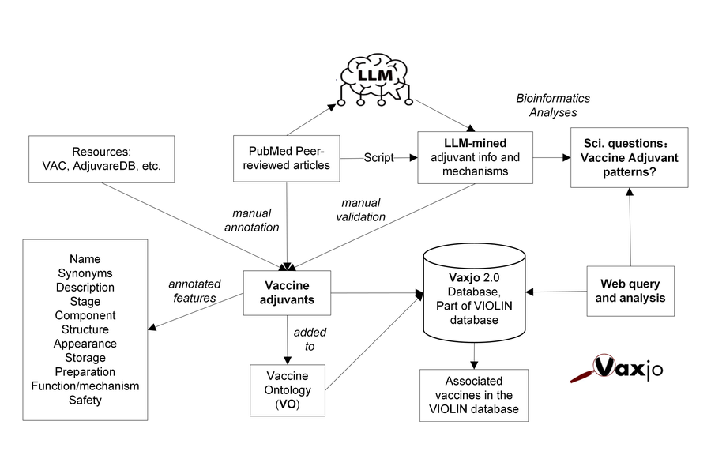
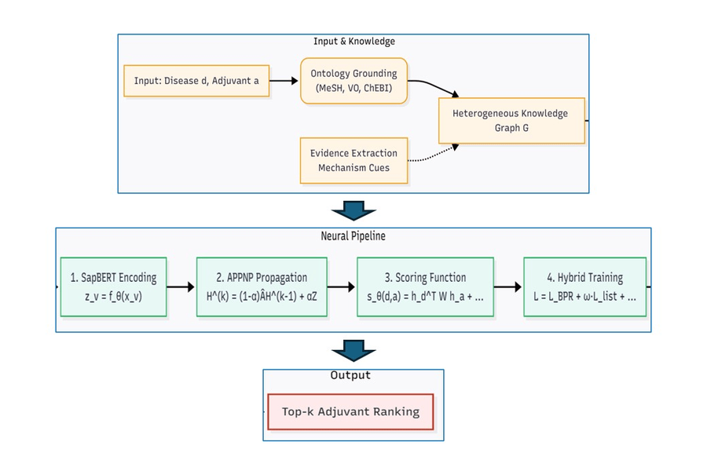
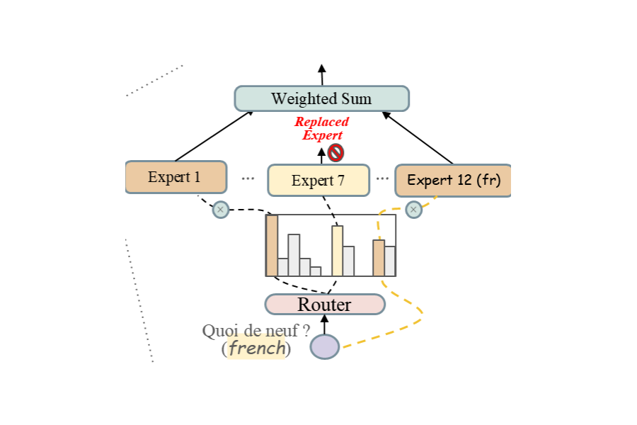
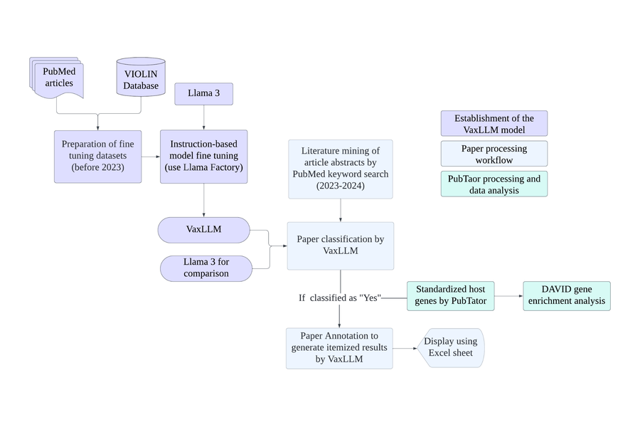

Vaxjo 2.0: An Ontology- and Large Language Model-Powered Knowledge Base of Vaccine Adjuvants and Mechanisms
Frontiers in Cellular and Infection Microbiology, 2026
Ph.D. Student in Computer Science · University of Virginia
I am a Ph.D. student in Computer Science at the University of Virginia, advised by Prof. Xi Peng.
My research interests broadly lie in representation learning, generative modeling, and interpretability. Recently, I have been particularly interested in understanding how models learn and organize internal representations, especially in world models and multimodal systems.

Frontiers in Cellular and Infection Microbiology, 2026

bioRxiv, 2025
An ontology-grounded graph learning framework for vaccine adjuvant recommendation under sparse and heterogeneous biomedical evidence.

International Conference on Learning Representations (ICLR), 2025
A multilingual mixture-of-experts framework for scaling medical language models across 50 languages through language-family-based routing.

Can the forward process of a discrete generative model be learned rather than hand-designed? We explore learnable corruption schedules and discrete state representations for flow matching. A learned one-dimensional codebook improves generation, while increasing its dimensionality reveals an unexpected failure mode: the training objective continues to improve even as the learned representation becomes highly anisotropic and generation quality deteriorates.
How can structured biomedical knowledge help learning when experimental evidence is sparse and heterogeneous? In VaxjoGNN, we use an ontology-grounded graph representation to integrate vaccine, adjuvant, and biological knowledge for vaccine adjuvant recommendation.
Ph.D. in Computer Science
Advisor: Prof. Xi Peng
B.S. in Data Science and Big Data Technology